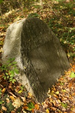
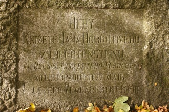
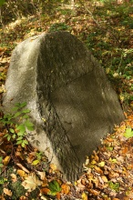
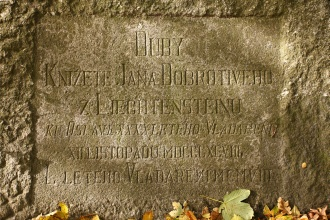
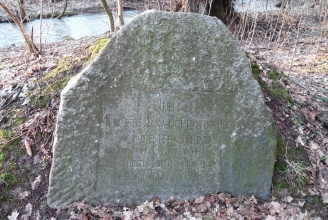
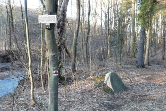
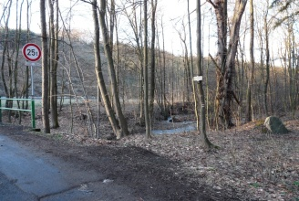
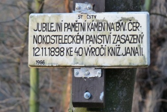

| Poloha obce: | severozápadnì od Kostelce nad Èernımi lesy |
| Okres: | Kolín |
| Panství: | Kostelec nad Èernımi lesy |
| Lesní úøad: | Kostelec nad Èernımi lesy |
| Pùvodní revír: | Doubravèice |
| Evidenèní è.: | 018 |
| Rozmìry: | vıška 128 cm, šíøka 144 cm, tlouš�ka 39 cm. |
Popis památníku:
Kamennı památník má pøibli�nì tvar obdélníkové desky s vıraznì okosenımi horními rohy. Na pøední stranì je hladce srovnána mírnì zahloubená obdélníková plocha 67 cm vysoká a 86 cm široká, ve které je vyryt velmi dobøe èitelnı èeskı nápis tohoto znìní:
„Duby Kní�ete Jana Dobrotivého z Liechtensteinù ku Oslavì xxxx letého Vladaøení XII. listopadu MDCCCXCVIII L letého vladaøení MCMVIII“.Kámen se nachází u mostku pøes potok Šemberu pod Doubravèicemi.
17.10.2010 Foto Martin Jirák

 



16.1.2011 Fotografie zaslal pan Jindøich Hlaváè




Externí odkazy:
http://www.doubravcice.cz/index.php?nid=1950&lid=CZ&oid=931986 - Stránky obce Doubravèice.
{kind=link}
{kind=link}
{kind=link}
{kind=link}
{kind=link}
{kind=link}